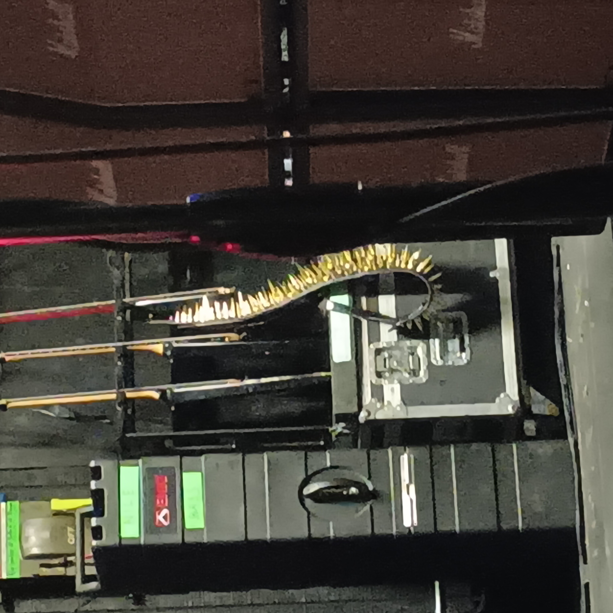
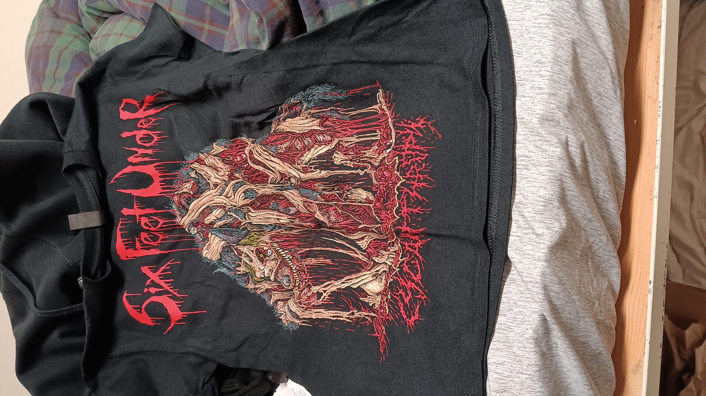
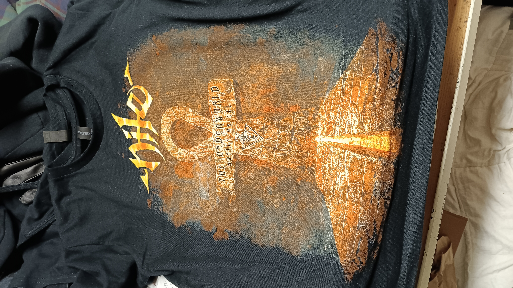

February 11th, 2025

Unlike the other shows I had lined up in February, I wasn't entirely set on going to this one in advance. It depended a lot on whether nothing else came up and whether I thought I could fit it into my budget for that month. I decided to go after all, although I only bought a ticket at the last minute (really, more like the week of). I was also unsure about going because I hadn't heard many good things about Six Feet Under. Really I only heard people complaining about Chris Barnes' vocals. But he was the OG vocalist of Cannibal Corpse, so I felt it would still be neat to see him. And I figured it would be worthwhile to give SFU a chance and formulate my own opinion on them. I also had heard many good things about Nile and wanted to see them, too. I had checked out Annihilation of the Wicked recently, and it was a pretty good album. Whether I checked it out because of the show or checked out the show because of the album, I'm not sure.
I arrived at the venue early to have good pickings for the merch, but sadly neither Nile or SFU had patches available. I ended up buying a Nile tour shirt and a SFU shirt with some cool artwork on it. Those two shirts together were very expensive though. The two openers were Embryonic Autopsy and then Psycroptic; hard not to get those two confused. I don't remember much about Embryonic Autopsy, but I think they were good. Psycroptic was also really good, and their frontman had a really cool personality. I would be pleasantly surprised several months later when I saw him fronting Origin.

Six Feet Under was up next, and I did in fact see Chris Barnes. For the first chunk of the set, he had a kind of deer in the headlights look on his face, and in general the band seemed pretty sluggish/low energy. But the crowd was really into it and I think that helped a lot. Chris Barnes' vocals weren't incredibly or anything, but honestly the riffs were solid and the vocals didn't ruin it for me at least in those moments. As the set went on the band seemed to relax a little and start having more fun. All in all, it was a fun show, and I don't regret going to see them at all. I still haven't tried any of their studio albums though; I really should. Another thing I should mention is that SFU's vocals are certainly....unique, but they seem to be embracing it in kind of a tongue-in-cheek way, and I respect them for that. One of the items at their merch booth was a sticker that was just a black rectangle with "EEEEEEEEE" in white text on it. I thought that was cute. I might've bought one, but they were like ten bucks, so no way.
Nile surprised me, although not really in the way I wanted. I expected them to really steal the show, but for whatever reason the energy just wasn't there in their set. I don't think the band members were out of it or anything, it's just for whatever reason I didn't really enjoy any of the songs they played that much. They didn't play anything from Annihilation from the Wicked, although I do think they played some classic tracks (just ones that I didn't know). I was really hoping to hear Lashed to the Slave Stick though. But the crowd seemed kinda mellow for Nile, so I guess it wasn't just me. I think there was an opportunity for an encore, but not that many people were cheering them back on stage, so there was no encore. I got to fist bump Karl Sanders at the end though, so that was pretty cool.

